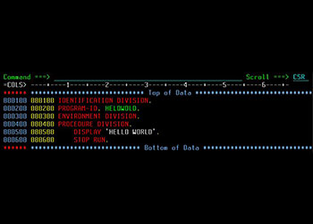

L'origine
La première forme de programmation a été mise en place en 1840 par Ada Lovelace. Elle a permis d'instaurer le principe des
itérations successives dans l'exécution d'une opération.
Quelques temps avant les années 1950, la programmation s'effectuait en binaire. C'est grâce à Grace Murray Hopper, une américaine travaillant
pour la marine américaine, qu'est né le premier compilateur qui était nommé A0. Il pouvait générer un programme binaire à partir d'un
"code source".
Les années 1950
|
Dans les années 1950, Maurice V. Wilkes met au point "l'assembleur" qui permet la création de langages de "haut niveau". Vers 1955, le
langage Fortran commence à apparaître. Son nom est une abréviation de FORmula et TRANslator. |
 |
Les années 1960
|
En 1960, Cobol se place comme le langage le plus utilisé dans le monde et le restera durant 20 ans. Un autre langage émerge en 1962, le langage APL. Il a la particularité de ne comporter non pas des mots, mais des symboles spéciaux. Pour l'époque, il nécessitait un clavier spécial, rendant sa diffusion beaucoup plus difficile. Le langage BASIC a été créé en 1964 par Thomas Kurtz et John Kemeny pour leurs étudiants de collège. Au même moment, IBM développe le langage PL/1 qui corrige les faiblesses du Cobol et Fortran. |
Les années 1970
|
Durant les années 1970, cinq nouveaux langages ont fait leurs apparitions. Commencé en 1968, Niklaus Wirth dévoile le langage Algol qui
ne cessera d'être amélioré, à tel point qu'il en résultera un tout autre langage, le langage PASCAL. Le PASCAL a la particularité d'être
bien structuré, et très contraignant, ce qui le rend bien adapté à l'enseignement de la programmation. Il sera le langage préféré des
enseignants pendant 15 ans. |
Les années 1980
|
Dans les années 1980, on voit apparaître les début de la petite informatique et de la micro-informatique, comme les premiers PC et les
premiers Apple. La révolution objet est lancée et permet d'écrire de plus gros programmes mieux structurés et plus facilement modifiables.
En 1983, Bjarn Stroustrup développe une extension orientée objet du C pour créer le C++. |
Les années 1990
|
En 1990, Microsoft sort Windows 3.0, puis un an plus tard est annoncé Linux 0.01 par Linus Torvald. |

|
Les années 2000 jusqu'à nos jours
|
Les années 2000 sont plutôt consacrées à l'amélioration des langages existants. Le Java est enrichi de nouvelles bibliothèques de sous-programmes et devient disponible pour tous les systèmes d'exploitation. Le Delphi qui est le successeur du Pascal, offre une interface complète de développement. Le framework Laravel a été créé pour le langage PHP. |
Les langages de programmation à l'avenir ?
|
Nous pouvons voir une méthode se démocratiser depuis quelques années, il s'agit du NoCode. Le NoCode est une méthode reposant sur des
interfaces visuelles avec un principe de "glisser déposer". En clair, cela permet de développer sans avoir la moindre connaissance
en langage de développement informatique. Cette méthode permet des gains considérables aussi bien économiques que temporels. Même
si elles sont actuellement limitées en proposant moins de fléxibilité, les plateformes de NoCode ne cessent de s'améliorer.
|